Taartenbakkerij in Nijmegen
Gemaakt om te vieren.
Bruidstaarten, verjaardagstaarten en zoetigheden, helemaal op maat. Jij vertelt wat je viert, Vera ontwerpt een taart die net zo mooi is als hij smaakt.
4,7 uit 54 Google-reviews
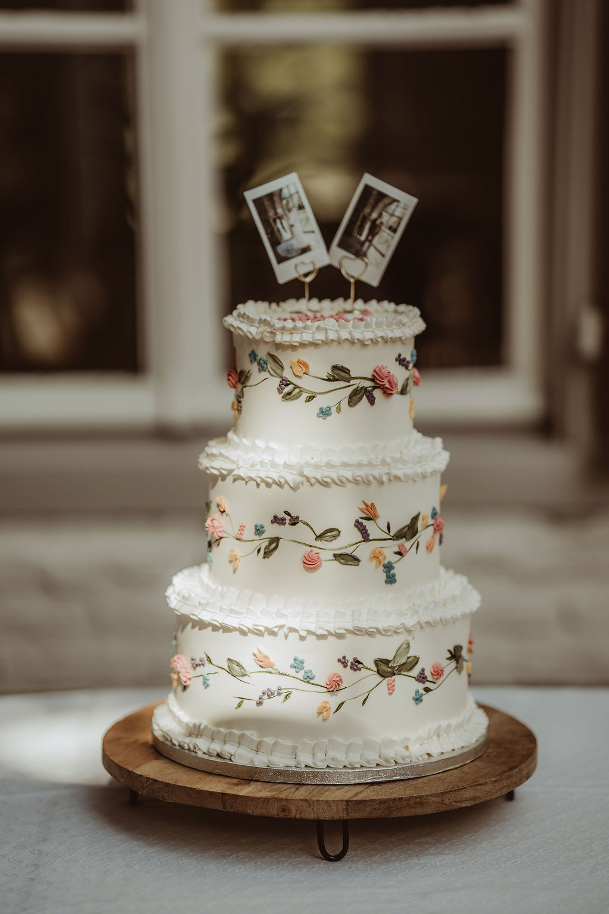
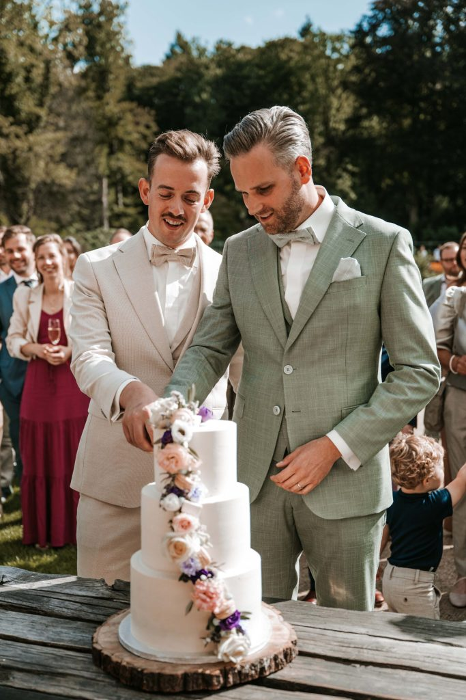
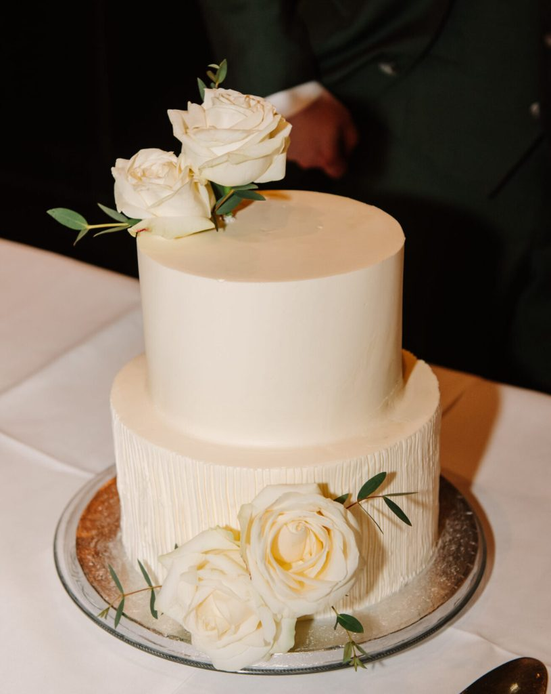
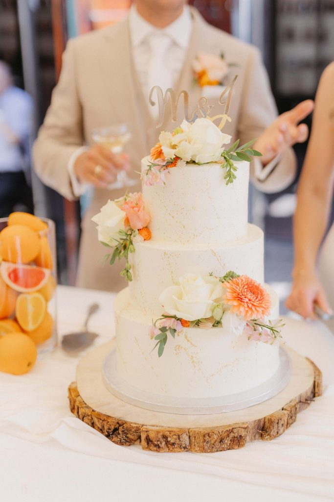
De taart van jullie dromen
Het samen aansnijden van jullie bruidstaart is een moment dat wordt vastgelegd, gedeeld en onthouden. Daarom is bij ZOET. geen bruidstaart standaard. Smaak, kleur, stijl en afwerking ontwerpen we samen, zodat alles past bij jullie dag.
Liever een tafel vol zoetigheden? Een sweet table met gevulde cupcakes, brownies, cheesecakes en cakepops kan ook, los of naast de taart.
- Proeven voor je kiest
- Met het proefpakket met uitleg kiezen jullie thuis rustig je smaak, van fruit tot chocolade.
- Meedenken over het ontwerp
- Een paar foto's als inspiratie is genoeg. Samen maken we er iets van dat bij jullie past.
Vera is een kunstenaar als het aankomt op taarten maken! De taart voor onze bruiloft was precies zoals wij voor ogen hadden, ondanks dat Vera van ons maar een paar foto's van Pinterest had ter inspiratie. De taart was zo lekker dat sommige gasten op onze bruiloft meerdere stukken taart hebben gehad!
Geen standaard taart. Jouw taart.
Jarig, een babyshower, een jubileum of de puppy is eindelijk zindelijk? Elke taart ontwerpen we op maat, met eigen recepten en keuze uit cake en vulling. Inspiratie aanleveren mag altijd. Kopiëren doen we nooit.
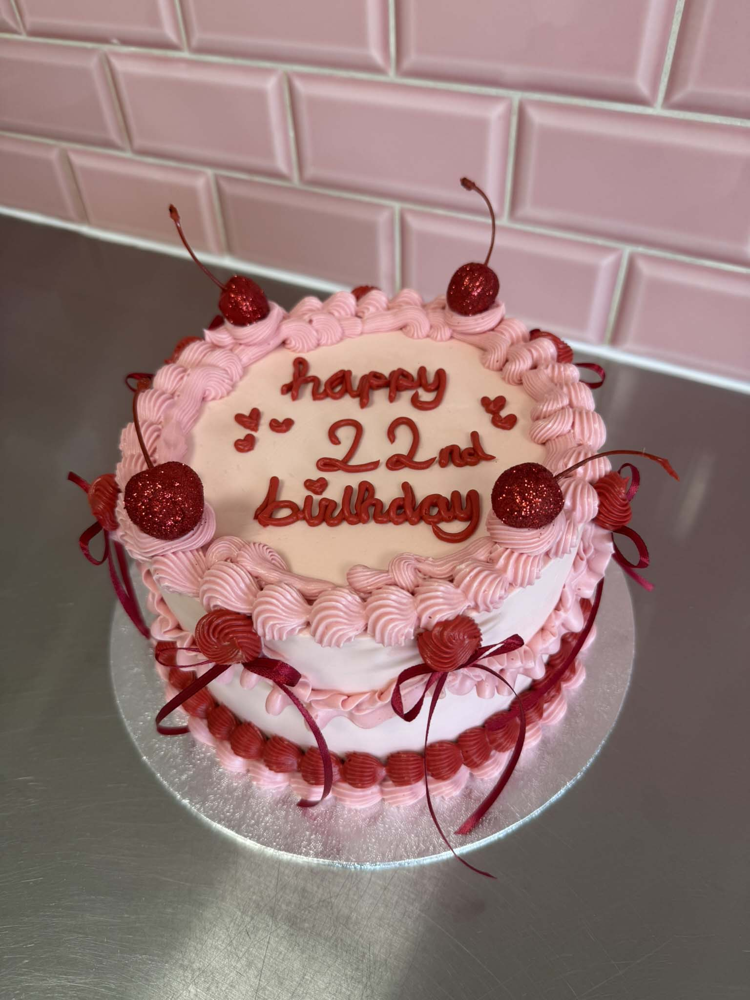
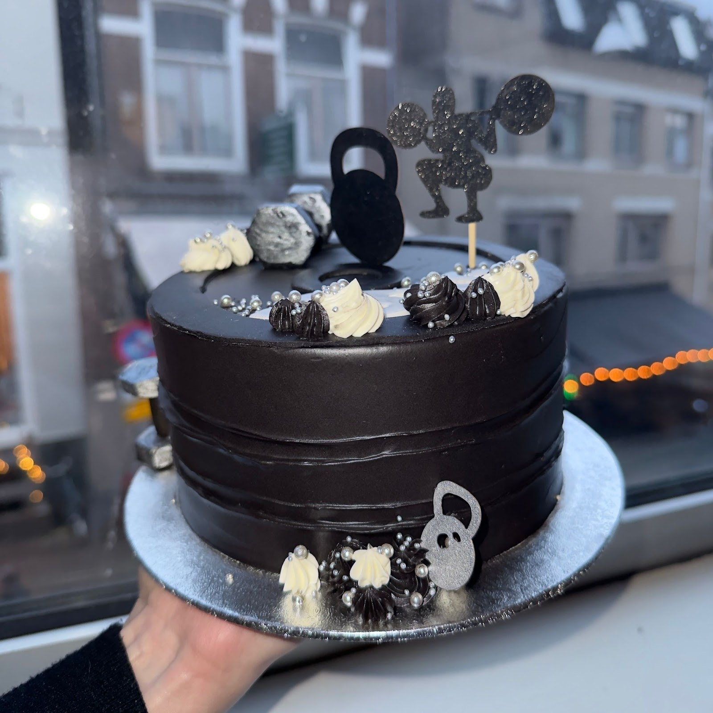
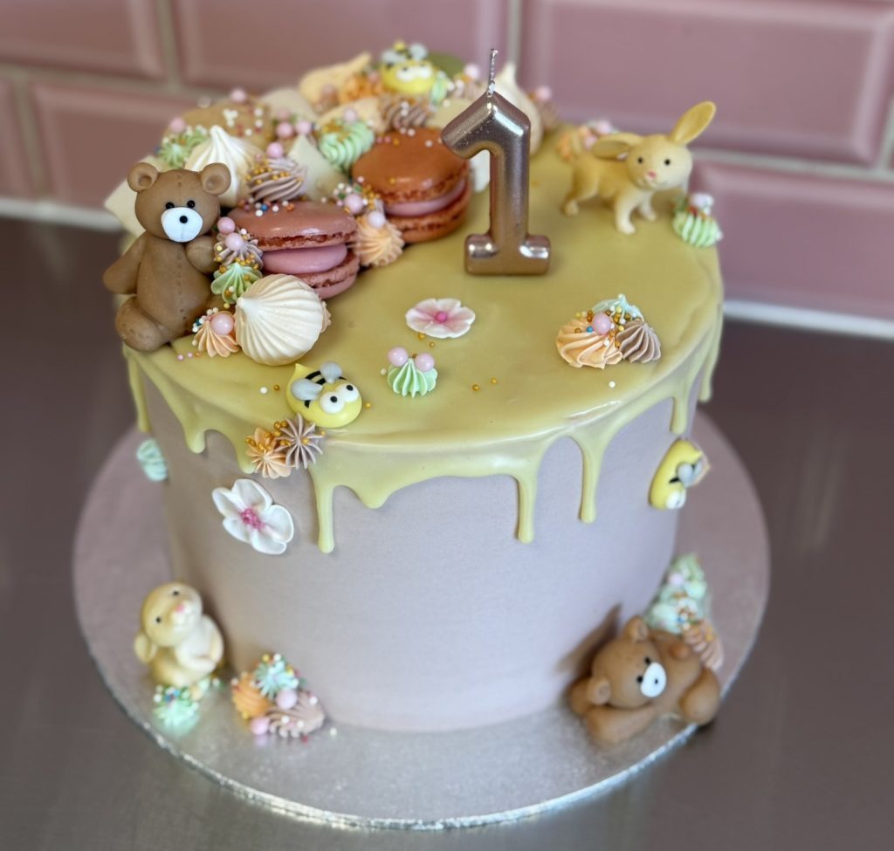
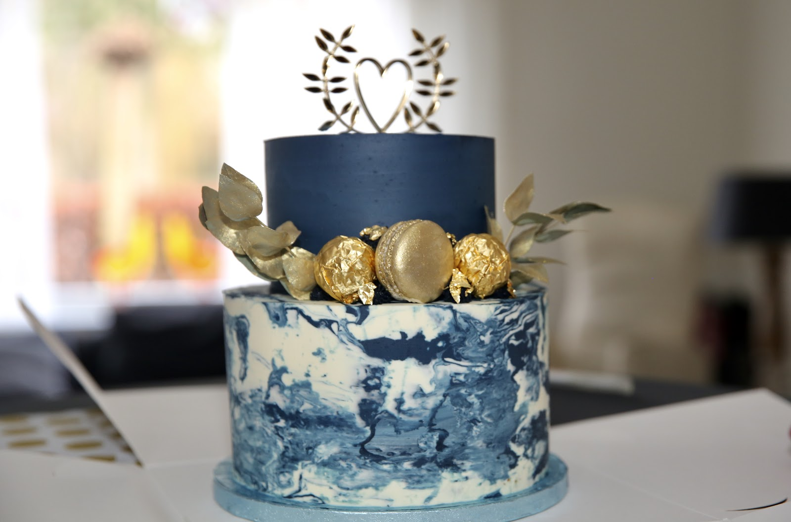
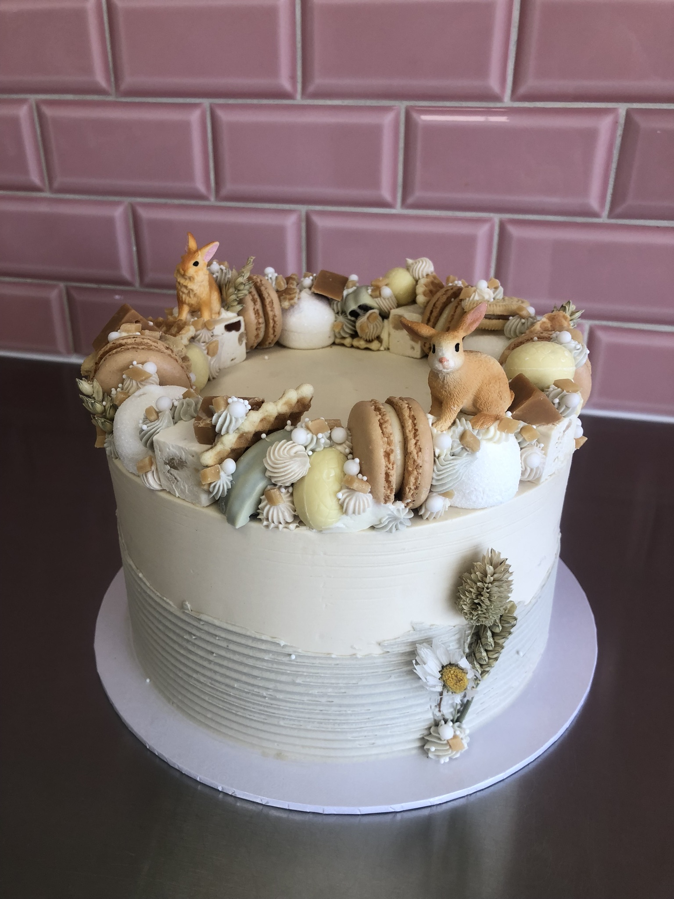
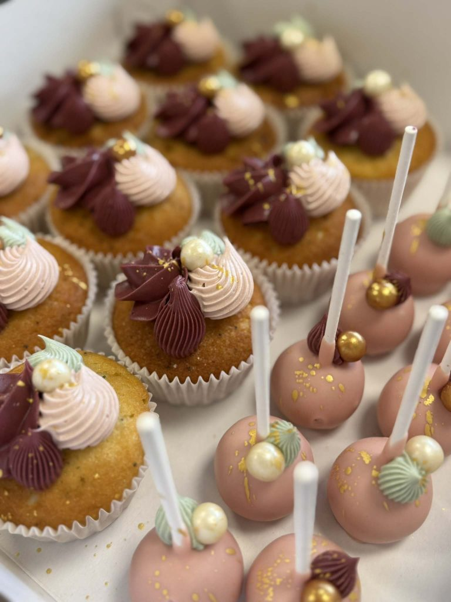
Zoetigheden voor erbij
Gevulde cupcakes, brownies, cheesecakes en cakepops. Los te bestellen voor een feestje, of als sweet table die in stijl past bij de rest van je dag.
Vraag naar de mogelijkhedenDe Sint is weer in het land.
Ook dit jaar een ZOET. Sinterklaasmenu om de heerlijke avondjes helemaal af te maken.
Bestel het Sinterklaasmenu-
Sint taartje
€50
Voor 8 tot 10 personen. Speculaas karamel of vanille aardbei. Groter formaat nodig? Geef het aan bij je bestelling.
-
Cupcakes
€3,50 per stuk
Vanaf 4 stuks. Speculaas karamel of vanille aardbei.
-
Chocolade roomletter S
Van Callebaut melkchocolade, in het thema superhelden, unicorn, voetbal, chocolate dream, dino's, K-pop Demon Hunters, Sinterklaas of kleurrijk snoepfeest. Ander thema? Kan in overleg, vanaf 5 stuks.
Bestellen in vier stappen
Bestel een taart op maat het liefst 2 tot 4 weken van tevoren. Last minute? Stuur gerust een mailtje, soms is er tussendoor nog plek.
-
1
Check je datum
Mail ons met je datum. We controleren de beschikbaarheid en bevestigen zo snel mogelijk.
-
2
Deel je wensen
Formaat, cake en vulling, afsmeerstijl en decoratie. Een kleurenpalet, uitnodiging of inspiratiefoto mag je meesturen.
-
3
Je krijgt een overzicht
We beantwoorden elke aanvraag met de hand, het liefst binnen twee werkdagen, met een compleet kostenoverzicht.
-
4
Aftellen en ophalen
Akkoord? Dan is je bestelling definitief. Betalen doe je bij het ophalen in de bakkerij.
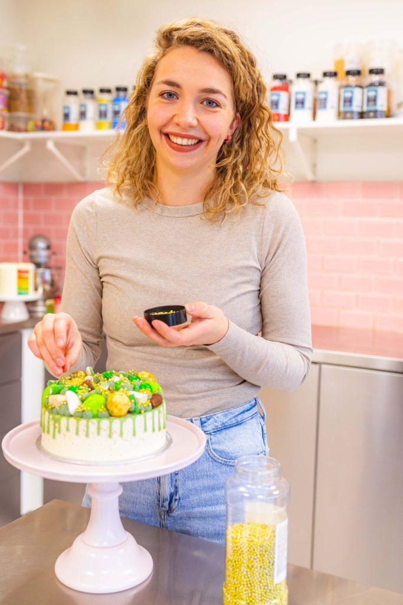
Hoi, ik ben Vera.
Al 8 jaar bruist onze kleine bakkerij in Nijmegen van creativiteit en zoetigheid. Sinds 2025 mag ik mezelf de trotse eigenaresse van ZOET. noemen. Wat ooit een passie was, is nu mijn dagelijkse werk: taarten en zoetigheden maken die mensen blij maken.
Elke bestelling is een nieuwe uitdaging. Het mooiste? De glimlach van klanten als ze hun bestelling zien, en het idee dat ik een klein stukje mag bijdragen aan hun mooiste momenten.
Waar iedereen nog een stukje van wil
4,7 uit 54 Google-reviews
“Recent een verjaardagstaart gehaald bij Zoet, en twee jaar geleden maakten ze ook onze bruidstaart. Beide taarten waren niet alleen prachtig, maar ook ontzettend lekker! Daarnaast was de service top. Echt een aanrader!”
“We hebben dit weekend voor de derde keer een verjaardagstaart opgehaald bij Zoet. Elke keer ziet de taart er weer prachtig uit en smaakt deze fantastisch.”
“Er is van alles mogelijk, er wordt goed meegedacht en een laatste toevoeging was geen probleem. Alle lof voor Vera!”
“De taarten zien er prachtig uit en zijn ook nog eens heerlijk! Alles was mogelijk en zo zijn we samen met Vera tot onze droomtaart gekomen. Wij zouden iedereen aanraden om bij ZOET. een bruidstaart af te nemen! Iedereen was er erg over te spreken.”
“Al jarenlang bestel ik de meest prachtige en heerlijke thema taarten en cupcakes bij ZOET. Iedere keer is het weer een verrassing hoe mooi en smaakvol het eruit ziet!”
“De taarten van ZOET. zijn altijd een feestje. Bij iedere verjaardag staat hier een taart van hen in thema op tafel. Die maken het feestje helemaal af!”
“Onze bruidstaart was perfect, zowel qua smaak als presentatie! ZOET heeft ons heel blij gemaakt. Tijdens de voorbereidingen hebben zo ook aandachtig naar ons geluisterd, want het was precies zoals we graag wouden. We hebben heel veel complimenten gehad over de taart. Dikke 5 sterren!”
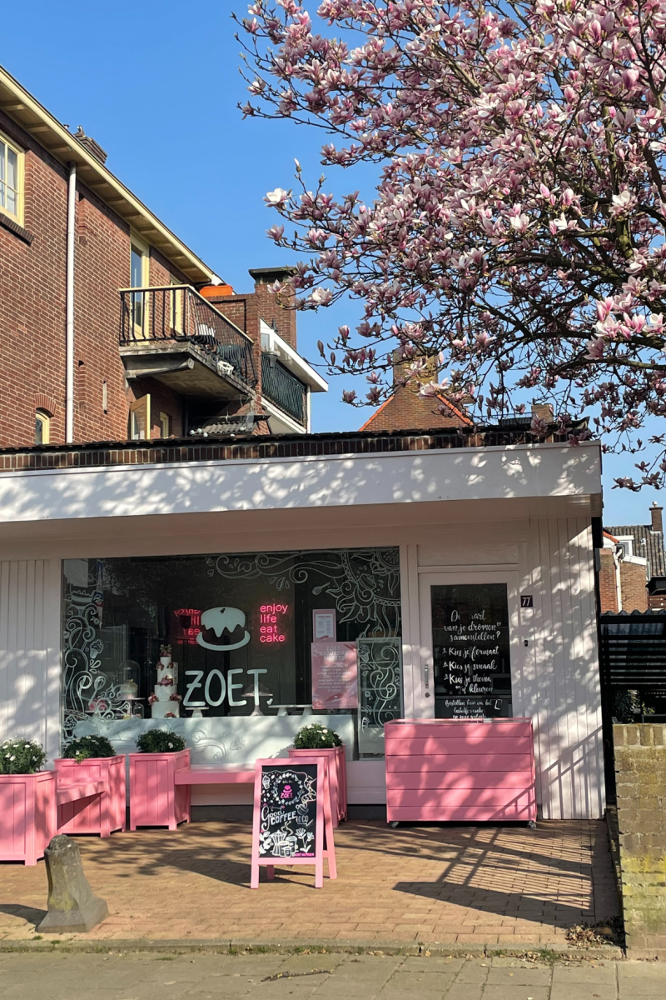
Kom langs aan de Broerdijk.
Je herkent ons aan de roze gevel. Hier haal je je bestelling op en reken je af.
Openingstijden
| Maandag | gesloten |
| Dinsdag | gesloten |
| Woensdag | 09:00 tot 14:00 |
| Donderdag | 09:00 tot 14:00 |
| Vrijdag | 09:00 tot 14:00 |
| Zaterdag | 09:00 tot 12:00 |
| Zondag | gesloten |